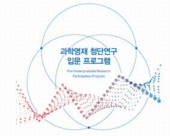

Portfolio
"Soccer Robot (made with Arduino)" at KAIST Indonesia overseas Volunteer, 2020
I took on the role of teaching ICT to Indonesian students by serving as the team leader of the ICT advanced team at KAIST's overseas volunteer work in Indonesia. At this time, students made a soccer robot using Arduino and played a game directly using it, so that they could learn ICT knowledge through physical experience.
"Pattern Puzzle" (Android Application), 2018
This is an app that started with the idea of making a puzzle game using the patterns of an Android smartphone (made with a friend). It was developed using Processing for Android, and the pattern was implemented as an adjacency matrix. It consists of "Stage Mode" that solves fixed puzzles and "Arcade Mode" that solves as many random puzzles as quickly as possible. Through this application, we received a silver prize in the Korea Olympiad in Informatics competition.

"Study on software development based on Service Design" at SALAB, KAIST (Pre URP), 2017
Through the Pre URP program, I entered KAIST's lab as a high school student and conducted research. The purpose of this study was to facilitate organizational communication and develop efficient software. Various methods of service design methodology were applied to actual case studies and more efficient SW development was designed by convergence with software engineering.
"Organizing tailored traffic light system with genetic algorithm" at Gyeonggibuk Science Highschool R&E, 2017
This study started with the idea of reducing traffic congestion by using an appropriate signal system. Using genetic algorithm and SUMO, a traffic program, a signal system that minimizes traffic jams on various roads was automatically constructed. In a complex road, a method of generating and comparing several methods was used according to the method of dividing, applying a genetic algorithm, and merging.
"Smart Home Development Using Arduino (아두이노를 이용한 스마트홈 개발)" at Ajou university science education institute for gifted, 2015
This is a study on the development of a smart home that can easily control the situation inside the house using Arduino. Specifically, when exposed to dangerous objects, a buzzer sounds, the presence of a person is checked, the light is turned on, and the light is automatically adjusted by sensing the brightness of the light. Through this research, I graduated at the top from the Ajou university science education institute for gifted and won a University President's Award.
"Professional Baseball Encyclopedia (프로야구 백과사전)", 2014
It is the first Android application that I developed and released on Google Play when I was in my second year of middle school. This is an app that contains various information about Korean professional baseball, such as records for each player and team, and game schedule.